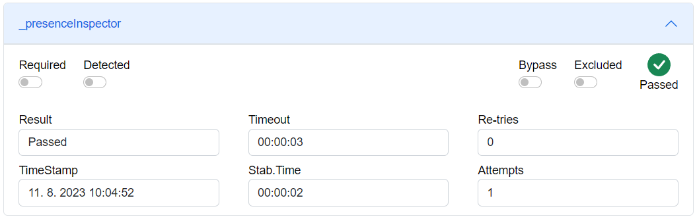
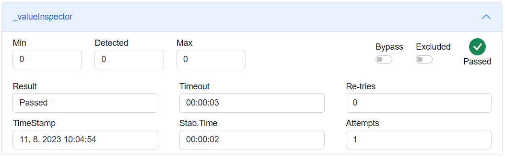
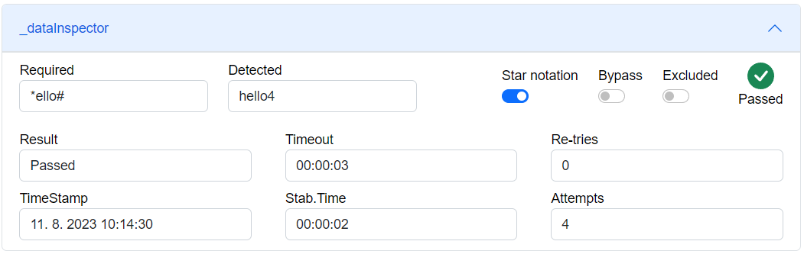
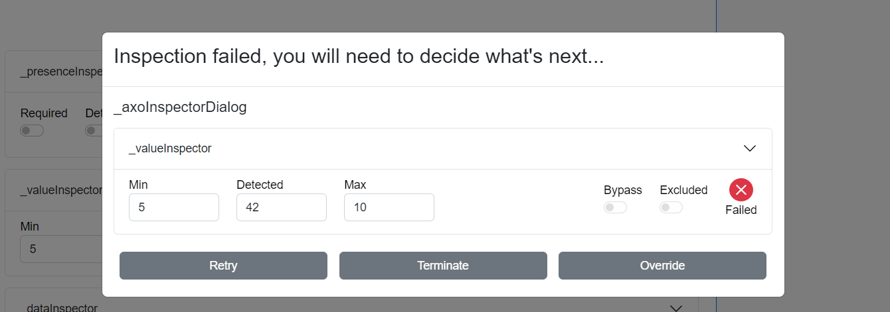
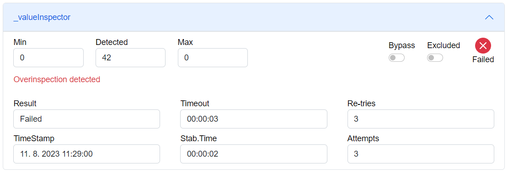

AXOpen.Inspectors
AXOpen.Inspectors provides mechanism of inspection of different types of data. The input value is compared to required value. If input value is the same as required value for a stabilization time period, the inspection will succeed. If values are different, timeout will occur and inspection will fail.
Inspectors can integrate with coordination primitives like AxoSequencer. In consequence, inspectors offer extended capabilities in decision flow for failed checks.
Each inspector contains:
Inspectmethod, which input is current parent and inspection variableOnFailmethod, which provides methods for making a decision after a failed inspection (see Handling failure section)UpdateComprehensiveResultmethod, which input is object of typeAxoComprehesiveResult, which can be used to gather results of all inspections.Common dataabout inspection inputs and result. See below.
Simple example inspection
- Declare variables
VAR PUBLIC
_digitalInspector: AXOpen.Inspectors.AxoDigitalInspector;
_analogueInspector: AXOpen.Inspectors.AxoAnalogueInspector;
_dataInspector: AXOpen.Inspectors.AxoDataInspector;
_inspectionResult: BOOL;
_inspectionValue: LREAL;
_inspectionData: STRING;
END_VAR
- Set initial inspection pass and fail timers
_digitalInspector.Data()^.FailTime := TIME#3s;
_analogueInspector.Data()^.FailTime := TIME#3s;
_dataInspector.Data()^.FailTime := TIME#3s;
_digitalInspector.Data()^.PassTime := TIME#2s;
_analogueInspector.Data()^.PassTime := TIME#2s;
_dataInspector.Data()^.PassTime := TIME#2s;
- Run inspections
_digitalInspector.Inspect(THIS, _inspectionResult);
_analogueInspector.Inspect(THIS, _inspectionValue);
_dataInspector.Inspect(THIS, _inspectionData);
- Check each inspector's data for results
Note
Inspectors use AxOpen.Timers for counting time during inspections. Make sure, that PLC cycle time value in configuration.st is set accordingly to Pass and Fail timers (it should be in tens or hundreds milliseconds, the value shouldn't higher than lowest difference between pass and fail timers). If there are small differences (in ms) between pass and fail times and PLC cycle time is higher number (e.g. 1000 ms), unexpected behavior may occur and inspections can fail (even if they should pass).
Example inspection with Coordinator
Example of inspection within a sequencer in PLC:
_digitalInspector.WithCoordinator(THIS).Inspect(THIS,_inspectionResult).UpdateComprehensiveResult(_comprehensiveResult).OnFail().CarryOn();
- A _presenceInspector is created instance of
AxoDigitalInspector - A coordinator is passed to this inspector with
WithCoordinator(THIS)method, in this case it is a sequencer, a parent object. Inspectmethods takes parent and inspection variable, on which inspection is performing.- If inspection fails, the result is updated to
_comprehensiveResultobject withUpdateComprehensiveResultmethod. - If inspection fails,
OnFailmethod providesCarryOnmethod, which tells the coordinator to continue in execution.
Common inspector data
Inspectors contain common data, which are used to store data about inspection. Each inspector contain following data:
//timestamp of inspection
{#ix-set:AttributeName = "<#TimeStamp#>"}
Timestamp: LDATE_AND_TIME;
//stabilization time, inspection must be success for this period of time
{#ix-set:AttributeName = "<#Stab.Time#>"}
PassTime : TIME;
//timeout, after which inspection fails
{#ix-set:AttributeName = "<#Timeout#>"}
FailTime : TIME;
//result of inspection
{#ix-set:AttributeName = "<#Result#>"}
Result : eInspectorResult;
//inspection will be performed, however result will be omitted in overall result
{#ix-set:AttributeName = "<#Excluded#>"}
IsExcluded: BOOL;
//inspection will be skipped
{#ix-set:AttributeName = "<#Bypass#>"}
IsByPassed : BOOL;
//maximum number of retries of inspection
{#ix-set:AttributeName = "<#Re-tries#>"}
NumberOfAllowedRetries : UINT;
//actual number of retries
{#ix-set:AttributeName = "<#Attempts#>"}
RetryAttemptsCount : UINT;
AxoDigitalInspector
Inspector provides evaluation of discrete value. The input value compares against the Required value. The inspection passes when the input value matches the required value without interruption for the duration of stabilization time.

Common inspector data are extended with following digital inspector data:
{#ix-set:AttributeName = "<#Required#>"}
RequiredStatus : BOOL;
{#ix-attr:[ReadOnly()]}
{#ix-set:AttributeName = "<#Detected#>"}
DetectedStatus : BOOL;
AxoAnalogueInspector
Provides evaluation of continuous values. The inspector checks that the input value falls within the limit of Min and Max. The inspection passes when the input value is within the required limit without interruption for the duration of stabilization time.

Common inspector data are extended with following analogue inspector data:
{#ix-set:AttributeName = "<#Min#>"}
RequiredMin : LREAL;
{#ix-attr:[ReadOnly()]}
{#ix-set:AttributeName = "<#Detected#>"}
DetectedStatus : LREAL;
{#ix-set:AttributeName = "<#Max#>"}
RequiredMax: LREAL;
AxoDataInspector
Provides evaluation of alphanumerical values. The input value compares against the Required value. The inspection passes when the input value matches the required value without interruption for the duration of stabilization time. In addition to exact comparison, data inspector allows for simple pattern matching where # = any number and * = any character.

Common inspector data are extended with following data inspector data:
{#ix-set:AttributeName = "<#Required#>"}
RequiredStatus: STRING;
{#ix-attr:[ReadOnly()]}
{#ix-set:AttributeName = "<#Detected#>"}
DetectedStatus : STRING;
{#ix-set:AttributeName = "<#Star notation#>"}
StarNotationEnabled: BOOL;
Handling failure
When an inspector fails, OnFail() provides a series of methods for making decisions about the process. In order for this is feature to work the inspector needs to be aware of the coordinator of IAxoCoordinator. The coordinator must be passed to the inspector by WithCoordinator(coordinator) method.
| Syntax | Description |
|---|---|
| Dialog(inRetryStep, inTerminateStep) | Opens dialog for the user to take a decision. Parameter inRetryStep represent state from which the inspection should start again. Parameter inTerminateStep represent terminate state of coordinator. |
| Retry(inRetryStep) | Retries the inspector. Retry state parameter tells from which state the inspection should start again. |
| Override() | Marks the inspection as failed but continues with the following states of the coordinator. |
| Terminate(inTerminateStep) | Marks the inspection as failed and aborts the execution of the coordinator. |
The following example specify, that when inspection fails, dialog is shown and is requesting user decision.
_dataInspector.WithCoordinator(THIS).Inspect(THIS,_inspectionData).UpdateComprehensiveResult(_comprehensiveResult).OnFail().Dialog(Steps[20], Steps[45]);

Over-inspection
When RetryAttemptsCount is same as NumberOfAllowedRetries, no more inspection are allowed, as data are overinspected.

Preserving overall result
Overall result of a series of inspections can be preserved in AxoComprehensiveResult. Each inspector has UpdateComprehensiveResult method that provides the update function. Once the UpdateComprehensiveResult marks the overall result as Failed, successive inspection will not overwrite the result.
IF (Steps[30].Execute(THIS, TRUE, 'Example Digital inspection')) THEN
_digitalInspector.WithCoordinator(THIS).Inspect(THIS,_inspectionResult).UpdateComprehensiveResult(_comprehensiveResult).OnFail().CarryOn();
END_IF;
IF (Steps[35].Execute(THIS, TRUE, 'Example Analog inspection')) THEN
_analogueInspector.WithCoordinator(THIS).Inspect(THIS,_inspectionValue).UpdateComprehensiveResult(_comprehensiveResult).OnFail().CarryOn();
END_IF;